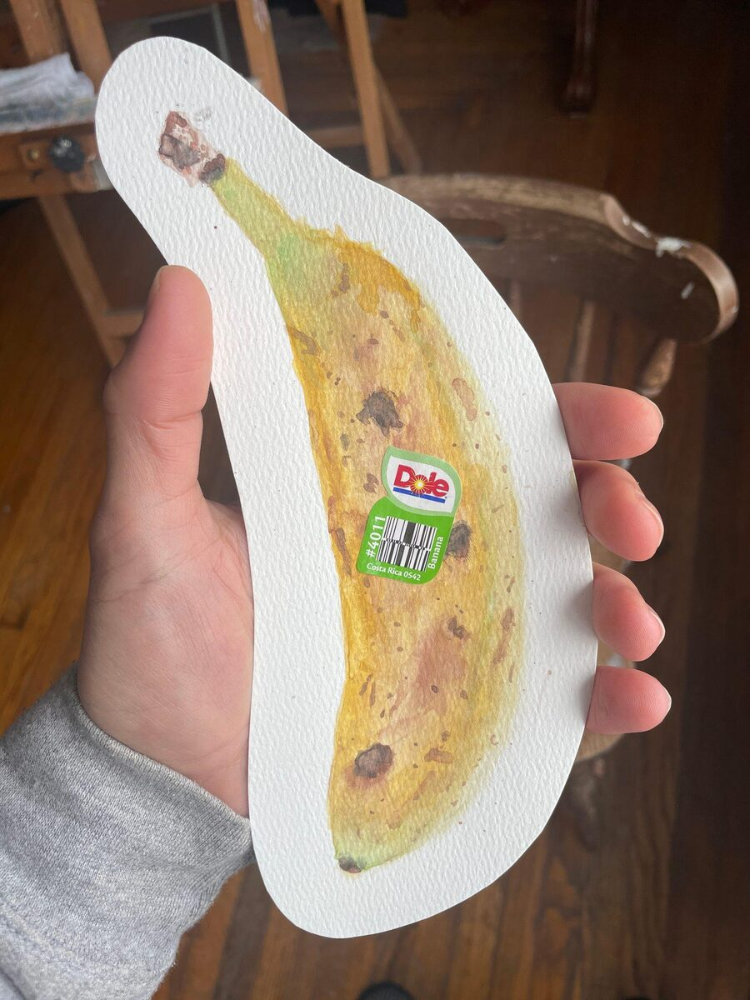
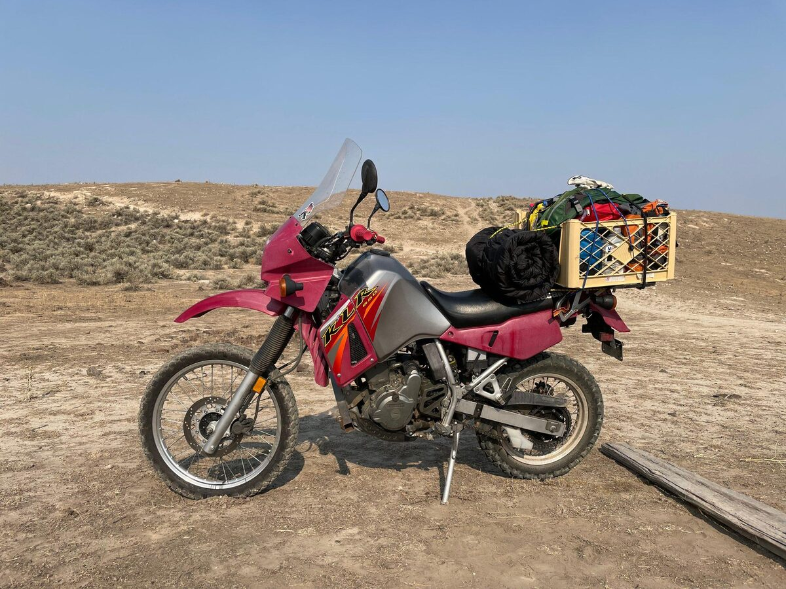
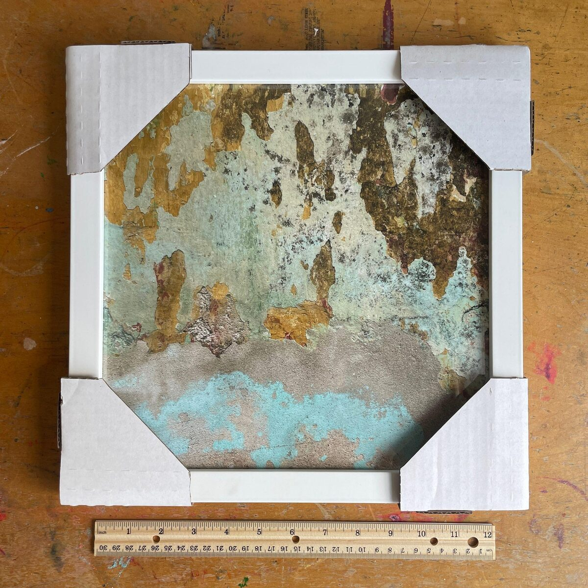
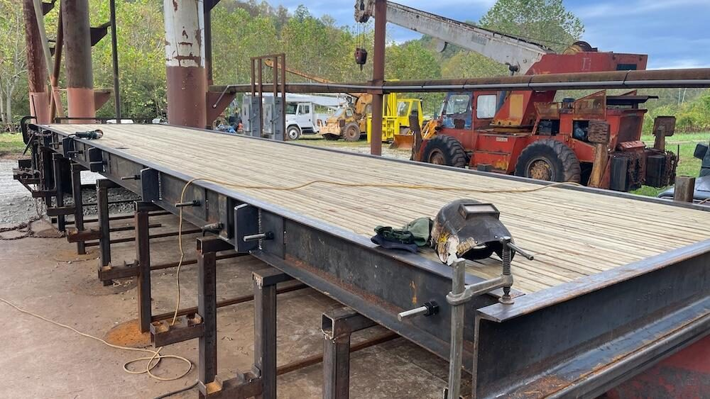

I wrote the following descriptions to provide context around four example projects that I recently built using a $100/mth Claude Max subscription.
The projects may seem unrelated at first: bananas, motorcycles, walls, bridges. But they all follow the same consistent process of taking whatever real-world material is available, finding the hidden structure, and transforming it into something more engaging, useful, or alive with the help of AI.
The purpose of this document is to demonstrate that process and to help you recognize where overlooked material might be hiding in the context of your own work or life—what kind of material do you have, and what could it potentially become?
I built each project from scratch, starting with a simple idea or objective and a clear set of constraints, then iterating toward a final version. No premade templates or designs were used.
Work like this once would have required a small team of developers, designers, testers, copywriters, and project managers, along with months of coordination and a substantial budget. I was able to build these projects myself in about a month, going directly from idea to execution without waiting on handoffs, approvals, or anyone getting back to me. And most notably, it was a lot of fun! Whether AI is good or bad I don't know, but it undeniably changes what one person can do.
The websites will load fine on mobile but a desktop experience is best. If you notice any bugs or have any suggestions, feel free to send me a message and let me know! Links throughout the descriptions point to specific reference pages or "materials" that were used.
1. Banana Vibes

I was interested in the idea of taking a simple analog object and using it as the foundation for a more complex, digital creation. The object I decided to use was a banana that I painted at my kitchen table with watercolors—what could be more simple!
I took a photo of the paper banana and then collaborated with AI to develop seven distinct animation engines with real-time physics. Once complete, I then designed and built a simple website dedicated to the animations (or vibes), as well as a "technical companion" that describes how each of them works. The standard .com domain extension would have cost $5,000, so instead I went with one I've never seen before....lol.
A few years ago I was living in Rochester NY for the summer, and my roommate had just graduated from the school of engineering at Rochester University. One evening he told me the story of how he learned that he's epileptic. Evidently he had been smoking pot one night with some friends when he suddenly fell to the ground and started convulsing. When the seizure was finally over he said the only way he could think to describe the experience to his friends was that it felt like, "247 oscillating salmon".
So when I was trying to decide how many bananas should be drawn to the animation canvases, I remembered my roommate's story and went with 247 bananas.
What stuck with me most about this project was how the process of building it felt equally intuitive as painting the watercolor banana itself. Two completely different mediums and outputs yet the process and feeling of making both was the same.
Without an AI assistant, every little technical issue you hit while building something like this would pull you out of "the zone" and cost hours of troubleshooting. With AI you work through those same issues in real-time and stay focused on the human part—more time painting, less time thinking about how to paint.
Materials: watercolor banana, phone photo, cut-out paper object, animation ideas, real-time physics constraints, AI-generated code, seven distinct "vibe" engines, technical documentation
2. The KLR Trip

I bought an old Kawasaki motorcycle on Craigslist and rode it 5,200 miles from Washington State to Florida. The route that I traveled was improvised each day, and at night I slept on the ground, beside the motorcycle. It took me 16 days.
After the trip I went back and plotted my improvised route in Google Maps. I used that resulting GPS data to build a scroll-driven interactive experience with real-time map animation, an elevation profile along the bottom of the screen, various display mode toggles, clickable waypoints with photo & video overlays, and a counter for displaying rear tire rotations based on the dimensions of the same Shinko 5.10x17 that I used for the trip.
If you click the HOME button on the outro screen, you'll hear an audio recording of me starting up the motorcycle!
On the first morning of the trip I woke up next to Lake Crescent, on the Olympic Peninsula. As I was rolling up my sleeping bag, a passing fisherman asked me where I was headed. When I told him Florida, he said, "That's a lotta bugs n dust." So on the intro and outro screens you'll notice a tiny bug flying around and landing on the text—programming the behavior of that bug was probably the most difficult part of this project!
Materials: 5,200-mile route, KML/elevation data, photos/videos, waypoints, motorcycle audio, trip story
3. Walls of Mexico

While I was traveling in the Yucatán I stumbled into a small city called Valladolid—near the Mayan ruins of Chichén Itzá. I was inspired by all the different textures, materials, and colors that make up the city's rich colonial architecture and spent several days walking around the streets, photographing various walls that caught my eye. As my collection of wall photos grew, I got the idea to print them and build wooden frames for them. So with the help of local Mayan carpenters, we cut and assembled over 800 pieces of wood! "Loco!", they called me.
Unfortunately there turned out to be termites living inside the wood that we used, so all the framed photos were destroyed before I had a chance to hang them!
In response to the insects I had the entire collection of 100 photos professionally printed and framed back in the US, where they are currently sitting in boxes. They have not been displayed yet.
I wanted to build a website dedicated to the walls of Mexico but instead of just turning the collection of photos into a generic gallery, I thought it would be interesting to repurpose them into some type of complimentary digital experience, which could then be engaged with on its own, or together, alongside the framed physical photos (when they're eventually displayed somewhere).
The idea I came up with was using AI to extract and map each wall's dominant color back to a single pixel. Doing that for each photo gives you a unique palette of 100 colors that represent the walls. Using those colors, I then built a single webpage where generative patterns flow, sort, and scatter across the screen. When you click a color the wall that corresponds with that color is displayed in a lightbox.
There are three buttons at the bottom of the page: GENERATE cycles through the different pattern types, VIDEO pulls up the video footage that I filmed and stitched together in Valladolid while I was doing the project, and ABOUT provides a description of the project and details about how the website works.
When the frames are eventually displayed on a wall somewhere, my plan is to get a wide angle photo of them that can be embedded on the website and tie everything together—it will be a single photo of all the photos I took of walls, hanging on a wall, displayed on a website dedicated to walls!
Materials: 100 wall photos, Mexico travel, architectural textures, carpentry, failed physical framing project, process footage, termites, color extraction, generative pattern logic, physical prints waiting to be displayed
4. Bridge Landing Page

While reading about local businesses in Charleston WV, I became particularly interested in a small company that fabricates equipment for the oil and gas industry. I reached out to the company and spoke with the owner for a while about what they do. This led me to building a simple landing page for one of the lesser known products they've been manufacturing and selling for the past 20 years—pre-engineered bridges!
The landing page is meant to be a tool that helps educate potential customers about their bridges. It includes pictures, videos, and an embedded quote request form.
For fun, I even used Claude to build a nifty little animation to help visualize how the bridge panels are constructed (it only works properly on wider screens)! It's hard to believe that I was able to build such a complex animation by simply sharing a blueprint drawing with Claude and describing with text what I want.
On the backend of the website I used Claude to build a small sample of programmatic SEO pages based on the 2025 National Bridge Inventory data, including graphs and tables. The sample comprises a single parent page that explains the overall condition of bridges across America and how the government's rating system works. At the bottom of that page there are links to 15 subsequent child pages that focus on states with the poorest ratings, while offering an explanation as to why they struggle.
I built an additional AI workflow that generates programmatic pages by combining potential industry use-cases, by state, with different bridge models. All of the pages use the same template, but by changing the state, application, and bridge model, you end up with lots of interesting possibilities! You can see those pages here.
Materials: business context, product history, bridge photos/videos, manufacturing details, bridge specs, quote form logic, National Bridge Inventory data, state-level infrastructure patterns, programmatic SEO page structure
Got Material?
Together, these projects are less about any one subject and more about a consistent way of working: finding the material, shaping it into something clear, and using AI to go from idea to execution faster and more economically than would have been possible before.
I'm looking for new things to build. If you've got a project or challenge that you're trying to figure out, send me a message and let's talk! I'm happy to take a look.
These are some places I may be useful:
- Making sense of scattered material, unclear goals, and hidden constraints
- Translating rough ideas into clear direction and next steps
- Finding the clearest angle or story inside a project
- Turning ideas into websites, demos, documents, visuals, or prototypes
- Explaining technical or complicated work in a way people can understand
- Developing customized systems, processes, and workflows
- Cleaning up messy data, spreadsheets, records, or documents so they can be searched, analyzed, explained, or used
- Using AI tools to research, write, design, analyze, and build faster
- Creating small public experiments that help an idea start moving
- Giving an extra set of eyes to something you're trying to figure out